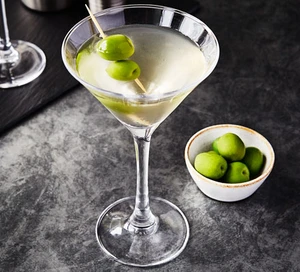

Classic Dry Martini

Description
This classic drink works in any setting and exudes style.
Ingredients
- 1x Bottle of Gin
- 1x Bottle of Sweet Vermouth
- 3x Olives
Steps
- Combine a few ounces of gin with zero vermouth in a cocktail shaker, with ice.
- Swirl the gin in the shaker until chilled. Dont shake! Bond's martini is wrong and possibly immoral.
- As you swirl, try to envision the rolling hills of rural Italy. This will provide the correct amount of vermouth for the cocktail.
- Strain gin into a martini glass.
- Garnish with olives on a toothpick. One olive or three olives is appropriate. Two olives is wrong and possibly immoral.
- Drink martini.
- Repeat steps 1-6.